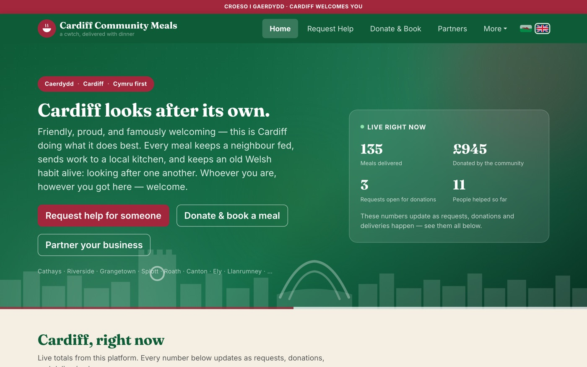
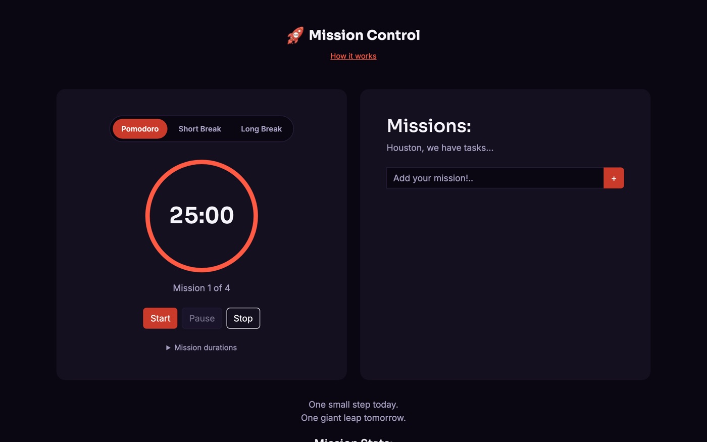

Code with a human pulse, not a corporate script.
I'm Sarah — a full-stack developer who builds software the way I'd want to use it: clear, fast, and free of jargon. No "bespoke solutions tailored to your needs." Just tools that work, for people who actually need them.
The world needs a human touch. That's what I bring to software.
I'm a full-stack developer obsessed with using code and logic to solve real problems for real people — not hypothetical ones in a slide deck. I handle everything from the front-facing experience to the architecture underneath, so the tools I build aren't just powerful, they're effortless to use.
While I've got a solid technical foundation in web systems and AI, I'll always choose real interactivity, clarity, and genuine connection over buzzwords. If a sentence needs a glossary, I haven't finished writing it yet.
Community Uplift
Built Cardiff Community Meals to connect local kitchens with vulnerable neighbours.
Small Business Uplift
Free website audits and Project OS — built for entrepreneurs, not enterprises.
Hackathon Energy
Thrives under deadline pressure — lifts teammates, unblocks code, keeps momentum.
Zero Jargon Policy
If it can't be explained plainly, it doesn't ship until it can.
Full-stack chops, human-first instincts.
Three things I take seriously on every build: the code underneath, the person using it, and the team around me.
Full-Stack & AI Systems
End-to-end builds — frontend clarity, backend robustness, deployed and maintained.
Human-Centric Design
UI/UX that respects the person on the other end of the screen — no matter their tech literacy.
Team Building & Energy
The person who keeps a hackathon team moving and a stakeholder conversation grounded.
Things I've built and shipped.
Real projects, real users — not portfolio filler.
Dragon Fire Design
"Three seconds is all you get. I build the website that argues back."
Everything on this page — the no-jargon rule, the human-first builds — comes from the same studio I run under Dragon Fire Design: hand-built, accessible websites for tradeswomen and women in business who keep getting pre-judged. Free Doubt Audit on every enquiry; you own the site outright, no monthly rent.
The SJH Process (Project OS)
A twelve-phase project delivery system built on a simple belief: nobody should have to type "any update?" 69 guided tasks, 72 templates, live client sign-in — licensed to other studios for a one-time £39, not another subscription nobody asked for.

Cardiff Community Meals
Lead developer and designer on a bilingual (Welsh/English) platform connecting vulnerable neighbours with meals, donors, and local Cardiff kitchens. Built for every age group and every level of technical confidence — because the people who need it most shouldn't need a manual.

Mission Control
Co-built a Pomodoro focus timer with a four-developer Agile team under a hard bootcamp deadline. My job wasn't just writing code — it was keeping the team's momentum high and unblocking whoever was stuck, whenever they got stuck.
CarbMate
A carb-counting and insulin bolus calculator, built because I'm a type 1 diabetic who found every existing app either too fiddly or paywalled. Free to use, built to learn from as you go.
CodeStar Blog
A full-stack Django blog with authenticated, moderated commenting and a rich-text editor — built past the basic tutorial CRUD into something with real editorial and safeguarding controls.
The journey.
From self-directed study to full-stack delivery — the long way round, and better for it.
Full-Stack Software Development Programme
Code InstituteEngineered and deployed 4 full-stack Django/Python applications. Building depth in Python, JavaScript and Django, applying Agile practices, Heroku deployment, and Git/GitHub workflows.
Web Consultant & Full-Stack Developer
Self-Employed ConsultancyFounded and ran an independent consultancy delivering end-to-end web engineering for small businesses — turning ambiguous client goals into structured workflows and responsive, well-maintained builds.
Independent Student & Systems Researcher
Autonomous Technical CurriculumRigorous self-directed engineering study, mastering Certified Internet Web Masters (CIW) web and network concepts.
CIW · BTEC · GCSEs
CIW Online · Coleg Glan Hafren · Bryn CelynnogCertified Internet Web Masters (2015) · BTEC National Diploma, Performing Arts (1999) · GCSEs, Wales. Earlier customer-facing roles at O2, Carphone Warehouse and Legal & General.
Got an idea for your business or community project?
Let's connect and make it pop — no jargon, no waiting three weeks for an update.